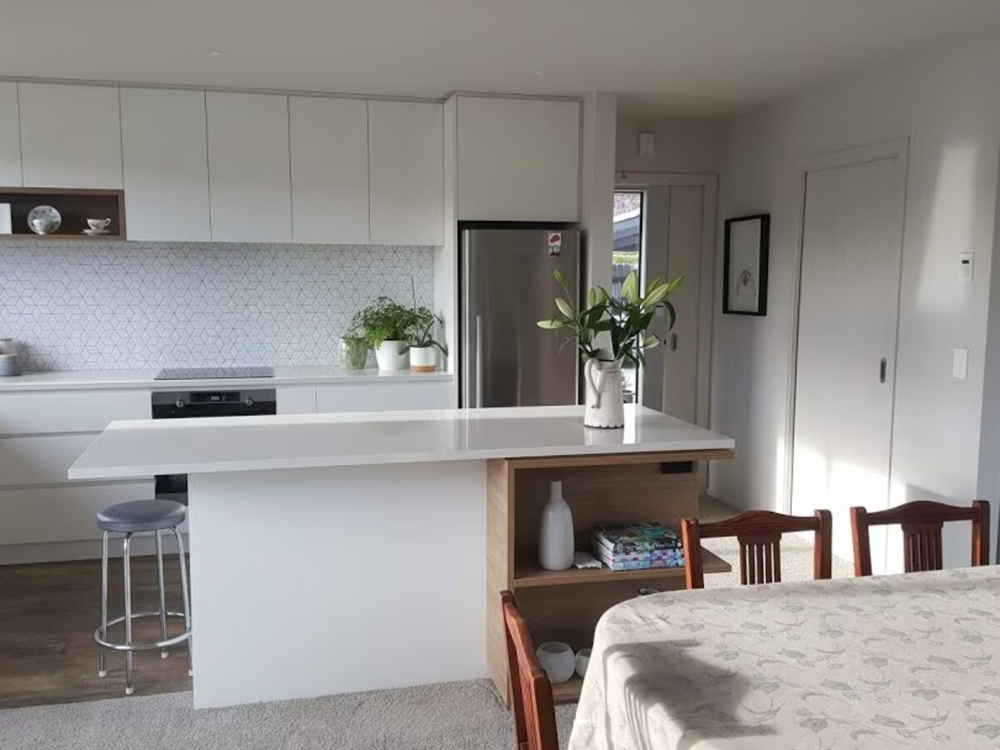
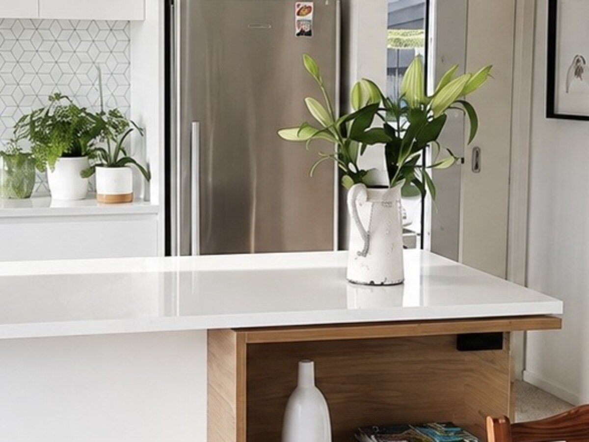
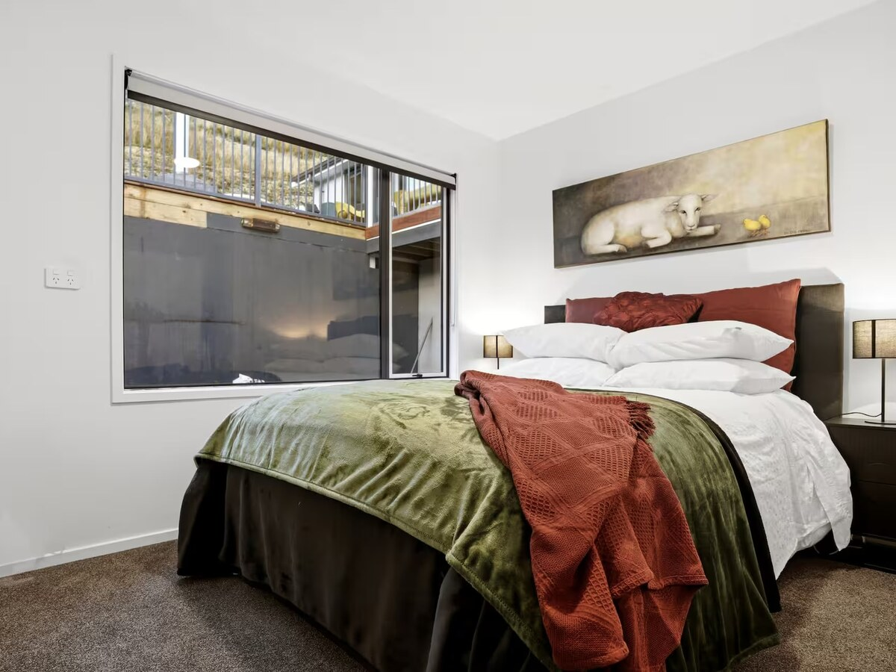
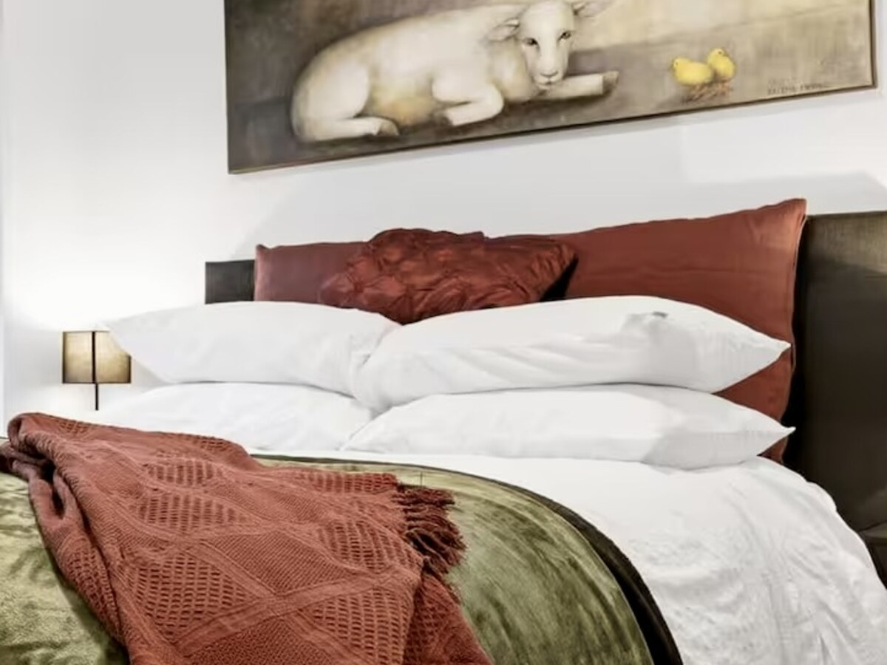

Can you spot what changed?
Same room. Same furniture. Nothing added. Five real listing photos, before and after — look at each one before you read the answer.
1 of 5


What changed?
Composition & perspective. A stronger angle makes the space feel clearer and more inviting.
2 of 5


What changed?
Styling & presentation. Small details help guests imagine themselves in the space.
3 of 5


What changed?
Light, colour & perspective. Balanced light and cleaner lines create a brighter, more accurate image.
4 of 5


What changed?
Styling & detail. A styled detail, like the flower arrangement, gives the space a point of interest the wide shot didn't have.
5 of 5


What changed?
Composition & framing. A tighter crop puts the bed and its layered textures at the centre, instead of empty floor and the view outside.
Same property. Same furniture. Same room.
Different first impression.
None of these are new photos of a different place. Every "after" is the same room, corrected rather than replaced — the kind of gap most listings have somewhere in the gallery without anyone noticing it. If you're not sure whether yours does too, that's exactly what the free guide below walks through.
Get the free Host Playbook
A short, practical guide to what to check in your own listing photos before you spend anything.